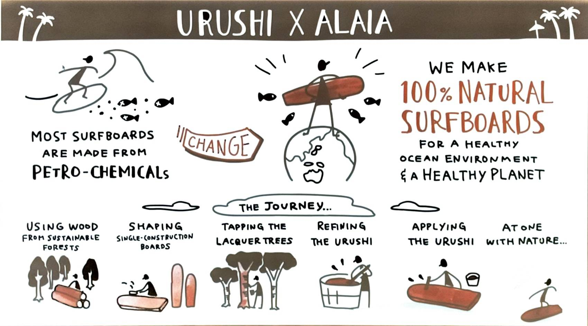

感想
私の考える地産地消は農家や畜産農家、作農家が行うイメージが強かったので、プロサーファーである石川拳大さんが
海洋ごみの視点からサー
フボードを木材で作ろうとする取り組みはとても斬新に感じた一方、新しい価値観と向き合う良い機会になりました。
今回の講演会で大切な事は、「この活動を通して少しでも海洋ごみが減れば良いな」では無く、今起きている（環境）問題に向き合い、自分に
できる事が無いかを考える姿勢を持つ事だと私は考えました。

参考動画～OCEANTREE ~ The Journey Of Essence ~ Episode.2 in Kyoto (2021) Trailer～